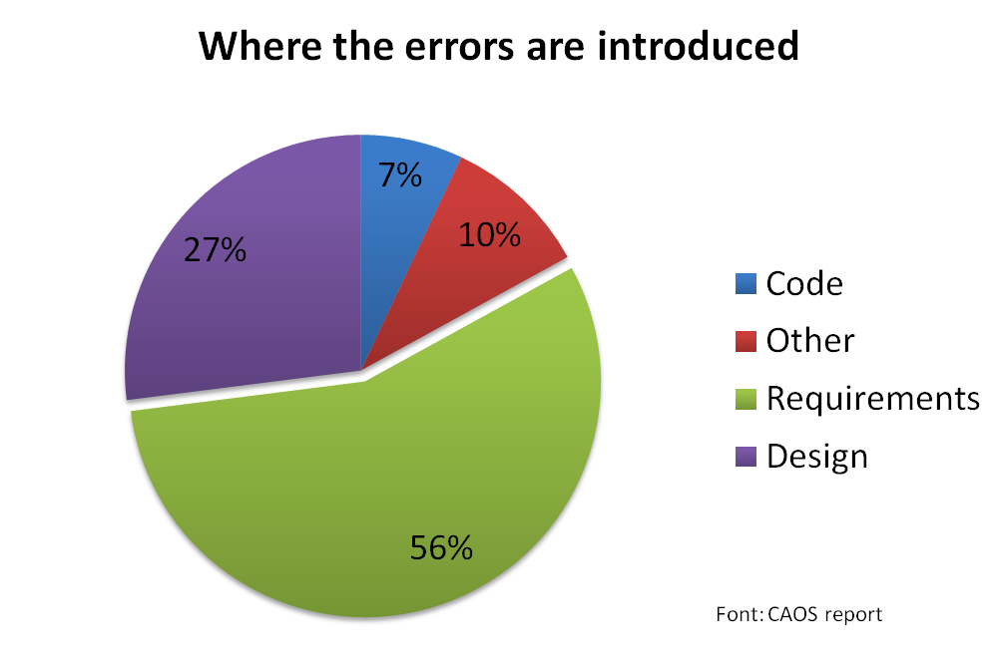

RSpec
and why to Automate Testing
Leonardo Richter Korndörfer
September 10, 2012
Leonardo Richter Korndörfer
September 10, 2012

RSpec is testing tool for the Ruby programming language. Born under the banner of Behaviour-Driven Development.
Documentation
$ gem install rspecgem 'rspec'
bundle install in your project
When your bundle finish executing your application will be ready to be tested with RSpec.
RSpec tests are written describing your application behavior. While writing RSpec tests you should expect to see the words "describe" and "it" as keywords, in order to express concepts just like in a conversation. The basic structure should look like:
describe Order do
it "sums the prices of its line items" do
order = Order.new
order.add_entry(LineItem.new(:item => Item.new(
:price => Money.new(1.11, :USD)
)))
order.add_entry(LineItem.new(:item => Item.new(
:price => Money.new(2.22, :USD),
:quantity => 2
)))
order.total.should eq(Money.new(5.55, :USD))
end
end When executing you should see:
"Describe an order."
"It sums the prices of its line items."
You can also declare nested groups using "context" and "describe"
describe Order do
context "with no items" do
it "behaves one way" do
# ...
end
end
context "with one item" do
it "behaves another way" do
# ...
end
end
end
Some other points:
describe is available at the top level
it, specify, or example
it are evaluated in the context of an instance of that class.
shared_examples "collections" do |collection_class|
it "is empty when first created" do
collection_class.new.should be_empty
end
end
describe Array do
include_examples "collections", Array
end
describe Hash do
include_examples "collections", Hash
end
# in spec/calculator_spec.rb
require "calculator"
describe Calculator do
it "add(x,y) returns the sum of its arguments" do
Calculator.new.add(1, 2).should eq(3)
end
end
# in lib/calculator.rb
class Calculator
def add(a,b)
a + b
end
end
$ rspec spec/calculator_spec.rb
.
Finished in 0.000315 seconds
1 example, 0 failures
class Employer end
describe Employer do
context "when it is first created"
it "should have default name and website"
it "should have no employees"
it "should be possible to rename"
it "should be possible to return the name and website as string"
it "should return an empty hash"
it "should be possible to add a new employee"
end
context "with employees"
it "should return hash with all employees in an array"
it "should be possible to remove an existing employee"
end
end
$ rspec code_samples/rspec_tests.rb
Employer
when it is first created
should have default name and website (PENDING: Not yet implemented)
should have no employees (PENDING: Not yet implemented)
should be possible to rename (PENDING: Not yet implemented)
should return the name and website as string (PENDING: Not yet implemented)
should return an empty hash (PENDING: Not yet implemented)
should be possible to add a new employee (PENDING: Not yet implemented)
with employees
should return hash with all employees in an array (PENDING: Not yet implemented)
should be possible to remove an existing employee (PENDING: Not yet implemented)
Is this good?
= confidence!
= fail fast and fix even faster!
Until now we have talked about structure.
Now it is time to build those tests!
RSpec::Expectations lets you express expected outcomes on an object in an example.
account.balance.should eq(Money.new(37.42, :USD))
Here's an example using rspec-core:
describe Order do
it "sums the prices of the items in its line items" do
order = Order.new
order.add_entry(LineItem.new(:item => Item.new(
:price => Money.new(1.11, :USD)
)))
order.add_entry(LineItem.new(:item => Item.new(
:price => Money.new(2.22, :USD),
:quantity => 2
)))
expect(order.total).to eq(Money.new(5.55, :USD))
end
end
expect syntax expect is the new syntax that solves some issues with shoud and rails edge.
For full documentation you should check on rspec rubydocs.
You can configure the syntax your project will be using with:
RSpec.configure do |config|
config.expect_with :rspec do |c|
c.syntax = :expect
# or
c.syntax = :should
# or
c.syntax = [:should, :expect]
end
end
expect syntax [1,2,3].should include(1)
[1,2,3].should include(1, 2)
[1,2,3].should start_with(1)
[1,2,3].should start_with(1,2)
[1,2,3].should end_with(3)
[1,2,3].should end_with(2,3)
{:a => 'b'}.should include(:a => 'b')
"this string".should include("is str")
"this string".should start_with("this")
"this string".should end_with("ring")Prefered:
expect(actual).to eq expected
expect(actual).to be > 3
expect([1, 2, 3]).to_not include 4